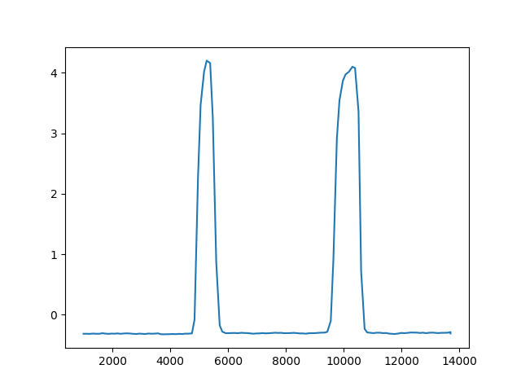
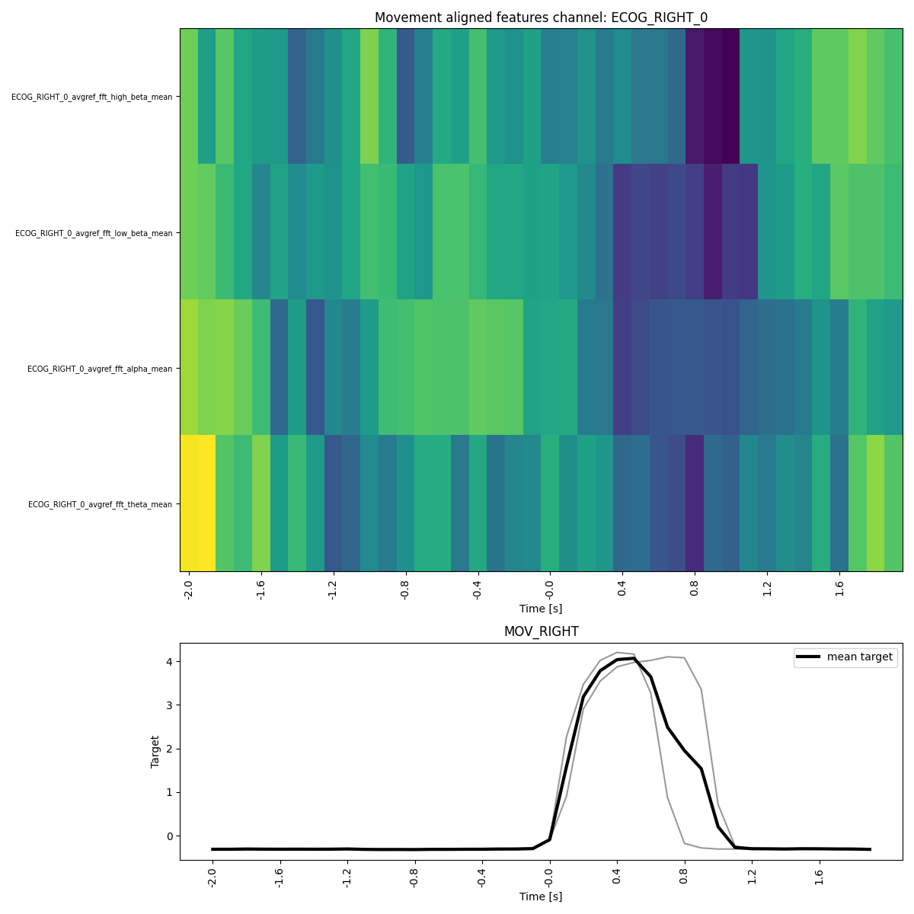

Note
Go to the end to download the full example code.
Lab Streaming Layer (LSL) Example#
This toolbox implements the lsl ecosystem which can be utilized for offline use cases as well as live streamings In this example the data introduced in the first demo is being analyzed in a similar manner, This time however integrating an lsl stream.
from matplotlib import pyplot as plt
import py_neuromodulation as nm
Let’s get the example data from the provided BIDS dataset and create the channels DataFrame.
if __name__ == "__main__":
(
RUN_NAME,
PATH_RUN,
PATH_BIDS,
PATH_OUT,
datatype,
) = nm.io.get_paths_example_data()
(
raw,
data,
sfreq,
line_noise,
coord_list,
coord_names,
) = nm.io.read_BIDS_data(PATH_RUN=PATH_RUN)
channels = nm.utils.set_channels(
ch_names=raw.ch_names,
ch_types=raw.get_channel_types(),
reference="default",
bads=raw.info["bads"],
new_names="default",
used_types=("ecog", "dbs", "seeg"),
target_keywords=["MOV_RIGHT"],
)
# %%
# Playing the Data
# ----------------
#
# Now we need our data to be represeted in the LSL stream.
# For this example an mne_lsl.Player is utilized, which is playing our earlier
# recorded data. However, you could make use of any LSL source (live or
# offline).
# If you want to bind your own data source, make sure to specify the
# necessary parameters (data type, type, name) accordingly.
# If you are unsure about the parameters of your data source you can
# always search for available lsl streams.
#
settings = nm.NMSettings.get_fast_compute()
player = nm.stream.LSLOfflinePlayer(raw=raw, stream_name="example_stream")
player.start_player(chunk_size=30, n_repeat=1)
import time
time.sleep(5)
# %%
# Creating the LSLStream object
# -----------------------------
#
# Next let’s create a Stream analog to the First Demo’s example However as
# we run the stream, we will set the *lsl-stream* value to True and pass
# the stream name we earlier declared when initializing the player object.
settings.features.welch = False
settings.features.fft = True
settings.features.bursts = False
settings.features.sharpwave_analysis = False
settings.features.coherence = False
# %%
stream = nm.Stream(
sfreq=sfreq,
channels=channels,
settings=settings,
coord_list=coord_list,
verbose=True,
line_noise=line_noise,
)
# %%
# We then simply have to set the `stream_lsl` parameter to be `True` and specify the `stream_lsl_name`.
# Schedule "stop" insertion in 5 seconds
features = stream.run(
is_stream_lsl=True,
stream_lsl_name="example_stream",
out_dir=PATH_OUT,
experiment_name=RUN_NAME,
)
player.stop_player()
# %%
# We can then look at the computed features and check if the streamed data was processed correctly.
# This can be verified by the time label:
plt.plot(features.time, features.MOV_RIGHT)
######################################################################
# Feature Analysis of Movement
# ----------------------------
# We can now check the movement averaged features of an ECoG channel.
# Note that the path was here adapted to be documentation build compliant.
feature_reader = nm.analysis.FeatureReader(
feature_dir=PATH_OUT, feature_file=RUN_NAME
)
feature_reader.label_name = "MOV_RIGHT"
feature_reader.label = feature_reader.feature_arr["MOV_RIGHT"]
feature_reader.plot_target_averaged_channel(
ch="ECOG_RIGHT_0",
list_feature_keywords=None,
epoch_len=4,
threshold=0.5,
ytick_labelsize=7,
figsize_x=12,
figsize_y=12,
)
- 
- 
Extracting parameters from /opt/hostedtoolcache/Python/3.12.11/x64/lib/python3.12/site-packages/py_neuromodulation/data/sub-testsub/ses-EphysMedOff/ieeg/sub-testsub_ses-EphysMedOff_task-gripforce_run-0_ieeg.vhdr...
Setting channel info structure...
/opt/hostedtoolcache/Python/3.12.11/x64/lib/python3.12/site-packages/py_neuromodulation/utils/io.py:61: RuntimeWarning: Did not find any events.tsv associated with sub-testsub_ses-EphysMedOff_task-gripforce_run-0.
The search_str was "/opt/hostedtoolcache/Python/3.12.11/x64/lib/python3.12/site-packages/py_neuromodulation/data/sub-testsub/**/ieeg/sub-testsub_ses-EphysMedOff*events.tsv"
raw_arr = read_raw_bids(bids_path)
Reading channel info from /opt/hostedtoolcache/Python/3.12.11/x64/lib/python3.12/site-packages/py_neuromodulation/data/sub-testsub/ses-EphysMedOff/ieeg/sub-testsub_ses-EphysMedOff_task-gripforce_run-0_channels.tsv.
/opt/hostedtoolcache/Python/3.12.11/x64/lib/python3.12/site-packages/py_neuromodulation/utils/io.py:61: RuntimeWarning: Other is not an MNE-Python coordinate frame for IEEG data and so will be set to 'unknown'
raw_arr = read_raw_bids(bids_path)
Reading electrode coords from /opt/hostedtoolcache/Python/3.12.11/x64/lib/python3.12/site-packages/py_neuromodulation/data/sub-testsub/ses-EphysMedOff/ieeg/sub-testsub_ses-EphysMedOff_space-mni_electrodes.tsv.
/opt/hostedtoolcache/Python/3.12.11/x64/lib/python3.12/site-packages/py_neuromodulation/utils/io.py:61: RuntimeWarning: There are channels without locations (n/a) that are not marked as bad: ['MOV_RIGHT']
raw_arr = read_raw_bids(bids_path)
/opt/hostedtoolcache/Python/3.12.11/x64/lib/python3.12/site-packages/py_neuromodulation/utils/io.py:61: RuntimeWarning: Not setting position of 1 misc channel found in montage:
['MOV_RIGHT']
Consider setting the channel types to be of EEG/sEEG/ECoG/DBS/fNIRS using inst.set_channel_types before calling inst.set_montage, or omit these channels when creating your montage.
raw_arr = read_raw_bids(bids_path)
/opt/hostedtoolcache/Python/3.12.11/x64/lib/python3.12/site-packages/py_neuromodulation/utils/types.py:138: PydanticDeprecatedSince211: Accessing the 'model_fields' attribute on the instance is deprecated. Instead, you should access this attribute from the model class. Deprecated in Pydantic V2.11 to be removed in V3.0.
for f in self.model_fields.keys()
/opt/hostedtoolcache/Python/3.12.11/x64/lib/python3.12/site-packages/py_neuromodulation/utils/types.py:138: PydanticDeprecatedSince211: Accessing the 'model_fields' attribute on the instance is deprecated. Instead, you should access this attribute from the model class. Deprecated in Pydantic V2.11 to be removed in V3.0.
for f in self.model_fields.keys()
/opt/hostedtoolcache/Python/3.12.11/x64/lib/python3.12/site-packages/py_neuromodulation/utils/types.py:138: PydanticDeprecatedSince211: Accessing the 'model_fields' attribute on the instance is deprecated. Instead, you should access this attribute from the model class. Deprecated in Pydantic V2.11 to be removed in V3.0.
for f in self.model_fields.keys()
/opt/hostedtoolcache/Python/3.12.11/x64/lib/python3.12/site-packages/py_neuromodulation/utils/types.py:148: PydanticDeprecatedSince211: Accessing the 'model_fields' attribute on the instance is deprecated. Instead, you should access this attribute from the model class. Deprecated in Pydantic V2.11 to be removed in V3.0.
for f in self.model_fields.keys():
/opt/hostedtoolcache/Python/3.12.11/x64/lib/python3.12/site-packages/py_neuromodulation/utils/types.py:148: PydanticDeprecatedSince211: Accessing the 'model_fields' attribute on the instance is deprecated. Instead, you should access this attribute from the model class. Deprecated in Pydantic V2.11 to be removed in V3.0.
for f in self.model_fields.keys():
/opt/hostedtoolcache/Python/3.12.11/x64/lib/python3.12/multiprocessing/popen_fork.py:66: DeprecationWarning: This process (pid=2378) is multi-threaded, use of fork() may lead to deadlocks in the child.
self.pid = os.fork()
/opt/hostedtoolcache/Python/3.12.11/x64/lib/python3.12/site-packages/py_neuromodulation/utils/types.py:138: PydanticDeprecatedSince211: Accessing the 'model_fields' attribute on the instance is deprecated. Instead, you should access this attribute from the model class. Deprecated in Pydantic V2.11 to be removed in V3.0.
for f in self.model_fields.keys()
/opt/hostedtoolcache/Python/3.12.11/x64/lib/python3.12/site-packages/py_neuromodulation/utils/types.py:138: PydanticDeprecatedSince211: Accessing the 'model_fields' attribute on the instance is deprecated. Instead, you should access this attribute from the model class. Deprecated in Pydantic V2.11 to be removed in V3.0.
for f in self.model_fields.keys()
/opt/hostedtoolcache/Python/3.12.11/x64/lib/python3.12/site-packages/py_neuromodulation/utils/types.py:138: PydanticDeprecatedSince211: Accessing the 'model_fields' attribute on the instance is deprecated. Instead, you should access this attribute from the model class. Deprecated in Pydantic V2.11 to be removed in V3.0.
for f in self.model_fields.keys()
/opt/hostedtoolcache/Python/3.12.11/x64/lib/python3.12/site-packages/py_neuromodulation/utils/types.py:138: PydanticDeprecatedSince211: Accessing the 'model_fields' attribute on the instance is deprecated. Instead, you should access this attribute from the model class. Deprecated in Pydantic V2.11 to be removed in V3.0.
for f in self.model_fields.keys()
/opt/hostedtoolcache/Python/3.12.11/x64/lib/python3.12/site-packages/py_neuromodulation/utils/types.py:138: PydanticDeprecatedSince211: Accessing the 'model_fields' attribute on the instance is deprecated. Instead, you should access this attribute from the model class. Deprecated in Pydantic V2.11 to be removed in V3.0.
for f in self.model_fields.keys()
/opt/hostedtoolcache/Python/3.12.11/x64/lib/python3.12/site-packages/py_neuromodulation/utils/types.py:138: PydanticDeprecatedSince211: Accessing the 'model_fields' attribute on the instance is deprecated. Instead, you should access this attribute from the model class. Deprecated in Pydantic V2.11 to be removed in V3.0.
for f in self.model_fields.keys()
/opt/hostedtoolcache/Python/3.12.11/x64/lib/python3.12/site-packages/py_neuromodulation/utils/types.py:138: PydanticDeprecatedSince211: Accessing the 'model_fields' attribute on the instance is deprecated. Instead, you should access this attribute from the model class. Deprecated in Pydantic V2.11 to be removed in V3.0.
for f in self.model_fields.keys()
/opt/hostedtoolcache/Python/3.12.11/x64/lib/python3.12/site-packages/py_neuromodulation/utils/types.py:138: PydanticDeprecatedSince211: Accessing the 'model_fields' attribute on the instance is deprecated. Instead, you should access this attribute from the model class. Deprecated in Pydantic V2.11 to be removed in V3.0.
for f in self.model_fields.keys()
/opt/hostedtoolcache/Python/3.12.11/x64/lib/python3.12/site-packages/py_neuromodulation/utils/types.py:138: PydanticDeprecatedSince211: Accessing the 'model_fields' attribute on the instance is deprecated. Instead, you should access this attribute from the model class. Deprecated in Pydantic V2.11 to be removed in V3.0.
for f in self.model_fields.keys()
/opt/hostedtoolcache/Python/3.12.11/x64/lib/python3.12/site-packages/py_neuromodulation/utils/types.py:138: PydanticDeprecatedSince211: Accessing the 'model_fields' attribute on the instance is deprecated. Instead, you should access this attribute from the model class. Deprecated in Pydantic V2.11 to be removed in V3.0.
for f in self.model_fields.keys()
/opt/hostedtoolcache/Python/3.12.11/x64/lib/python3.12/site-packages/py_neuromodulation/utils/types.py:138: PydanticDeprecatedSince211: Accessing the 'model_fields' attribute on the instance is deprecated. Instead, you should access this attribute from the model class. Deprecated in Pydantic V2.11 to be removed in V3.0.
for f in self.model_fields.keys()
/opt/hostedtoolcache/Python/3.12.11/x64/lib/python3.12/site-packages/py_neuromodulation/utils/types.py:138: PydanticDeprecatedSince211: Accessing the 'model_fields' attribute on the instance is deprecated. Instead, you should access this attribute from the model class. Deprecated in Pydantic V2.11 to be removed in V3.0.
for f in self.model_fields.keys()
/opt/hostedtoolcache/Python/3.12.11/x64/lib/python3.12/site-packages/py_neuromodulation/utils/types.py:138: PydanticDeprecatedSince211: Accessing the 'model_fields' attribute on the instance is deprecated. Instead, you should access this attribute from the model class. Deprecated in Pydantic V2.11 to be removed in V3.0.
for f in self.model_fields.keys()
/opt/hostedtoolcache/Python/3.12.11/x64/lib/python3.12/site-packages/py_neuromodulation/utils/types.py:138: PydanticDeprecatedSince211: Accessing the 'model_fields' attribute on the instance is deprecated. Instead, you should access this attribute from the model class. Deprecated in Pydantic V2.11 to be removed in V3.0.
for f in self.model_fields.keys()
/opt/hostedtoolcache/Python/3.12.11/x64/lib/python3.12/site-packages/py_neuromodulation/utils/types.py:138: PydanticDeprecatedSince211: Accessing the 'model_fields' attribute on the instance is deprecated. Instead, you should access this attribute from the model class. Deprecated in Pydantic V2.11 to be removed in V3.0.
for f in self.model_fields.keys()
/opt/hostedtoolcache/Python/3.12.11/x64/lib/python3.12/site-packages/py_neuromodulation/utils/types.py:138: PydanticDeprecatedSince211: Accessing the 'model_fields' attribute on the instance is deprecated. Instead, you should access this attribute from the model class. Deprecated in Pydantic V2.11 to be removed in V3.0.
for f in self.model_fields.keys()
/opt/hostedtoolcache/Python/3.12.11/x64/lib/python3.12/site-packages/py_neuromodulation/utils/types.py:138: PydanticDeprecatedSince211: Accessing the 'model_fields' attribute on the instance is deprecated. Instead, you should access this attribute from the model class. Deprecated in Pydantic V2.11 to be removed in V3.0.
for f in self.model_fields.keys()
/opt/hostedtoolcache/Python/3.12.11/x64/lib/python3.12/site-packages/py_neuromodulation/utils/types.py:138: PydanticDeprecatedSince211: Accessing the 'model_fields' attribute on the instance is deprecated. Instead, you should access this attribute from the model class. Deprecated in Pydantic V2.11 to be removed in V3.0.
for f in self.model_fields.keys()
/opt/hostedtoolcache/Python/3.12.11/x64/lib/python3.12/site-packages/py_neuromodulation/utils/types.py:138: PydanticDeprecatedSince211: Accessing the 'model_fields' attribute on the instance is deprecated. Instead, you should access this attribute from the model class. Deprecated in Pydantic V2.11 to be removed in V3.0.
for f in self.model_fields.keys()
/opt/hostedtoolcache/Python/3.12.11/x64/lib/python3.12/site-packages/py_neuromodulation/utils/types.py:138: PydanticDeprecatedSince211: Accessing the 'model_fields' attribute on the instance is deprecated. Instead, you should access this attribute from the model class. Deprecated in Pydantic V2.11 to be removed in V3.0.
for f in self.model_fields.keys()
/opt/hostedtoolcache/Python/3.12.11/x64/lib/python3.12/site-packages/py_neuromodulation/utils/types.py:138: PydanticDeprecatedSince211: Accessing the 'model_fields' attribute on the instance is deprecated. Instead, you should access this attribute from the model class. Deprecated in Pydantic V2.11 to be removed in V3.0.
for f in self.model_fields.keys()
/opt/hostedtoolcache/Python/3.12.11/x64/lib/python3.12/site-packages/py_neuromodulation/utils/types.py:138: PydanticDeprecatedSince211: Accessing the 'model_fields' attribute on the instance is deprecated. Instead, you should access this attribute from the model class. Deprecated in Pydantic V2.11 to be removed in V3.0.
for f in self.model_fields.keys()
/opt/hostedtoolcache/Python/3.12.11/x64/lib/python3.12/site-packages/py_neuromodulation/utils/types.py:138: PydanticDeprecatedSince211: Accessing the 'model_fields' attribute on the instance is deprecated. Instead, you should access this attribute from the model class. Deprecated in Pydantic V2.11 to be removed in V3.0.
for f in self.model_fields.keys()
/opt/hostedtoolcache/Python/3.12.11/x64/lib/python3.12/site-packages/py_neuromodulation/utils/types.py:138: PydanticDeprecatedSince211: Accessing the 'model_fields' attribute on the instance is deprecated. Instead, you should access this attribute from the model class. Deprecated in Pydantic V2.11 to be removed in V3.0.
for f in self.model_fields.keys()
/opt/hostedtoolcache/Python/3.12.11/x64/lib/python3.12/site-packages/py_neuromodulation/utils/types.py:138: PydanticDeprecatedSince211: Accessing the 'model_fields' attribute on the instance is deprecated. Instead, you should access this attribute from the model class. Deprecated in Pydantic V2.11 to be removed in V3.0.
for f in self.model_fields.keys()
/opt/hostedtoolcache/Python/3.12.11/x64/lib/python3.12/site-packages/py_neuromodulation/utils/types.py:138: PydanticDeprecatedSince211: Accessing the 'model_fields' attribute on the instance is deprecated. Instead, you should access this attribute from the model class. Deprecated in Pydantic V2.11 to be removed in V3.0.
for f in self.model_fields.keys()
/opt/hostedtoolcache/Python/3.12.11/x64/lib/python3.12/site-packages/py_neuromodulation/utils/types.py:138: PydanticDeprecatedSince211: Accessing the 'model_fields' attribute on the instance is deprecated. Instead, you should access this attribute from the model class. Deprecated in Pydantic V2.11 to be removed in V3.0.
for f in self.model_fields.keys()
/opt/hostedtoolcache/Python/3.12.11/x64/lib/python3.12/site-packages/py_neuromodulation/utils/types.py:138: PydanticDeprecatedSince211: Accessing the 'model_fields' attribute on the instance is deprecated. Instead, you should access this attribute from the model class. Deprecated in Pydantic V2.11 to be removed in V3.0.
for f in self.model_fields.keys()
Total running time of the script: (0 minutes 23.489 seconds)